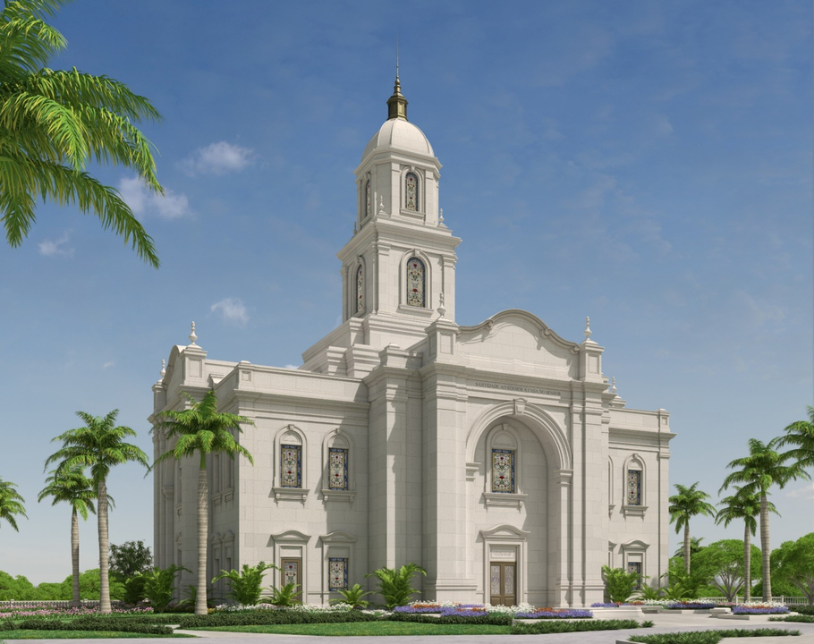

Some Temple from Brazil
Home
Old
New
Large
Small
Home

Salvador Temple, Brazil
Recife Temple, Brazil
São Paulo Temple, Brazil
Brasilia Temple, Brazil
Manaus Temple, Brazil
Curitiba Temple, Brazil
Campinas Temple, Brazil
Porto Alegre Temple, Brazil
Fortaleza Temple, Brazil